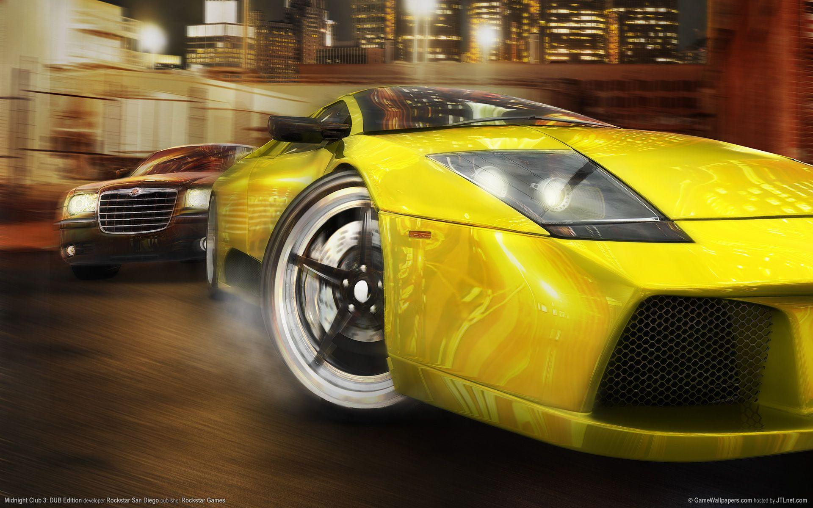

God of war

Aquí es donde todo comenzó... la gran historia de la saga Halo, sin duda el mejor exclusivo de Xbox y uno de los mejores juegos en la historia en general. La verdad es que gráficamente se ve muy avanzado para la fecha en que salió, la jugabilidad es entretenida y fácil de entender al mismo tiempo que la historia realmente es buena pero personalmente no lo considero como el mejor de los Halos ya que la historia por momentos la sentí algo aburrida aunque debo de reconocer que es muy inquietante y al mismo tiempo emocionante tantos misterios como los Flood, el que no se te explique al 100% que es el Covenant, el Oráculo el cual es el villano en esta entrega etc. Es uno de los juegos que marco mi infancia.Halo |
|---|
|
God of War 4 fue un viaje de Kratos y su hijo, Atreus, hasta la cima más alta del mundo para depositar las cenizas de su mujer, Faye. Ocultándose de los Dioses como mortales, Atreus se enteraba de que su padre era un Dios y él, por tanto, un SemidiosGod Of War |
|---|
Pou es un juego donde tienes que cuidar a una patata en forma triangular a pou se le tiene que bañar,cuidar,alimentar,etc tambien se le puede comprar ropa y muchas cosas mas es muy facil y sencillo de jugar ya que al principio vienen indicaciones de como jugarlo (cuidarlo) ya despues las barras de salud te van indicando que es lo que le hace falta y tu debes darle de comer o bañarlo para que vuelva a su 100% lo mas divertido es su microfono ya que tu hablas y el lo repite pero con sun tono de voz tambien que contiene mas juegos donde puedes ir ganando dinero y asi comprar mas Pous o accesorios tambien conforme la edad valla aumentando
|
|---|
|  | De los mejores juegos para Ps2, una verdadera joya. Aparecen los nombres reales de cada coche, los modelos son identicos al real, las gráficas son buenísimas, las opciones de tunning son muy variadas, hay un monton de partes que se pueden modificar en cada vehículo, tienen modelos muy iconicos como el corvette, camaro, y menos clásicos como cadillac cien, etc y hasta los soundtracks son buenosMidnightclub |
|---|
Genial,lo juego todos los dias desde inicios de 2021,es de los primeros juegos que jugue en la infancia y esta super tenerlo en tu bolcillo,muchos personajes,autos,y pistas aunque muchos reciclados,pero a cada quien le gusta los mismos modelos con diferentes tematicas,eso es demaciado bueno.todo me parece exelente

Es un juego de pelea creado en el 94 por la compañia SNK donde se recrea peleas callejeras en un torneo para saber que equipo permanecera hasta la batalla final, que podria ser desde pelear contra Rugal, Goenitz o Ash, dependiendo de la entrega que juegues |
|---|